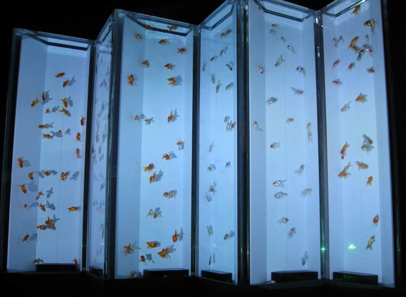

Roppongi Hills
I
stopped at Roppongi because I heard they had a tower with a better view
than Tokyo Tower (shorter, but you can see Tokyo Tower from it), and
they have an aquarium up there too. Sounded interesting. At
the Roppongi subway stop, I saw something that caught my attention.
They have standing areas for women only. Not women with
babies or pregnant women. Just women in general.
I
quickly learned the Roppongi Hills is a posh/trendy little shopping
area in Tokyo. Here's a big ol' advertisement at the base of the
Roppongi Tower.
Lots of flowers and a big spider sculpture decorated the courtyard.
I
got in the tower and the start of the aquarium was also the observation
area, way high up at the top of the tower. Here's a waterfall
flowing over fishtanks of tiny fish that look like Nemo.
I zoomed in again to take pictures of tiny sea creatures like this one.
Here's a view of Tokyo from Roppongi Tower. There it is, Tokyo Tower, right in the middle. It is pretty awesome.
Here's a zoomed-in shot of the tower from... the tower.
A seahorse! You can see the seemingly-glowing seahorse sniffing around with its blue-tinted snout.
A bright red shrimp that goes well with tartar sauce.
Pretty iridescent colors.

This is an interesting way to display fish. They look like they're swimming in front of folded paper.
The
aquarium was very impressively designed, but the fish themselves
weren't that impressive, and certainly not very big. I did like
this crystal curtain though.
Here's a fish that has fun in the sand.
This
room was fairly hypnotic. It was surrounded by mirrors, and had
some of these big glass orbs filled with fish. The mirrors made
the room seem larger, and projected the illusion of more orbs.
Staring
into the crystal ball, you can see lots of trapped fish. If you
ask, perhaps they can swim up and tell you your fortune.
Back